Editing
Editing video dan foto menggunakan CapCut, Photoshop, dan Alight Motion
PORTOFOLIO PRIBADI · 2026
Halo, saya
Mahasiswa Sistem Informasi | Universitas Kristen Satya Wacana
Saya senang belajar, membangun sesuatu, dan menemukan cara baru untuk menghubungkan teknologi dengan kebutuhan sehari-hari.
Mengenal lebih dekat
01 — INTRODUCTIONSaya Yefta Rendha Evanno, berasal dari Jepara, Jawa Tengah. Saat ini saya menempuh pendidikan pada Program Studi Sistem Informasi, Fakultas Teknologi Informasi, Universitas Kristen Satya Wacana.
Saya tertarik mempelajari bagaimana teknologi dapat membantu menyelesaikan kebutuhan sehari-hari dan mendukung proses bisnis. Saya terus mengembangkan kemampuan pemrograman, analisis, serta kerja sama tim melalui latihan dan proyek.
Di luar kegiatan belajar, saya menikmati bermain game dan berolahraga. Kegiatan tersebut menjadi cara saya menjaga keseimbangan, melatih strategi, disiplin, dan kolaborasi.
Lihat proyek saya“Kesuksesan adalah dia yang terus berusaha dan pantang menyerah.”
NIM682026052
Program StudiSistem Informasi
FakultasTeknologi Informasi
UniversitasUniversitas Kristen Satya Wacana
Hal yang sedang saya kembangkan
02 — WHAT I DOBerikut kemampuan yang sedang saya pelajari dan praktikkan. Persentase merupakan perkiraan tingkat kepercayaan diri pribadi, bukan hasil sertifikasi.
Editing video dan foto menggunakan CapCut, Photoshop, dan Alight Motion
Dasar pemrograman, logika, dan pembuatan proyek
Berbicara di depan umum dan menyampaikan presentasi
Tools untuk coding, pengembangan proyek, dan belajar pemrograman
Kepemimpinan, menghargai pendapat, dan koordinasi tim
Ketertarikan pada pengelolaan dan proses bisnis
Karya dan proses belajar
03 — SELECTED WORKBeberapa proyek yang saya kerjakan sebagai bagian dari proses belajar dan pengembangan kemampuan.
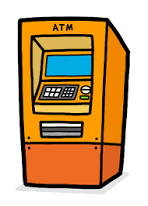
Proyek bertema ATM untuk melatih penerapan dasar pemrograman dan penyusunan alur program.
Lihat di GitHub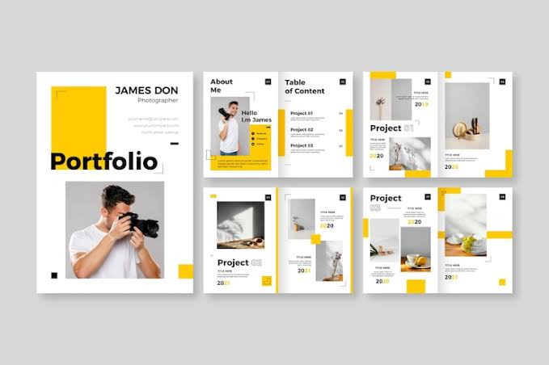
Website portofolio pribadi untuk memperkenalkan profil, kemampuan, proyek, dan minat saya. Dibangun menggunakan HTML, CSS, dan JavaScript.
Lihat di GitHub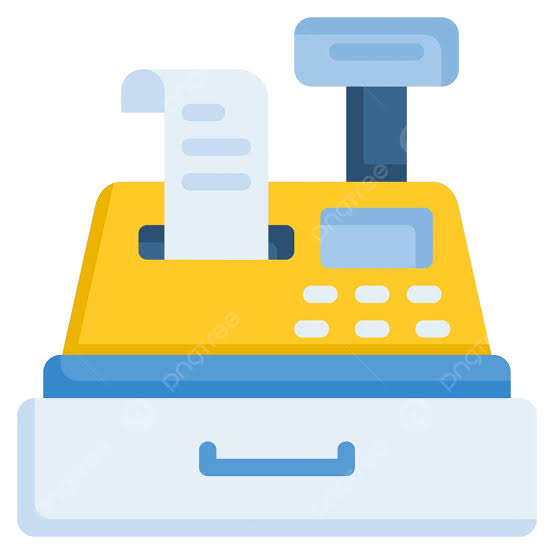
Proyek aplikasi kasir untuk mempraktikkan alur transaksi, perhitungan belanja, dan pencatatan hasil transaksi.
Lihat di GitHub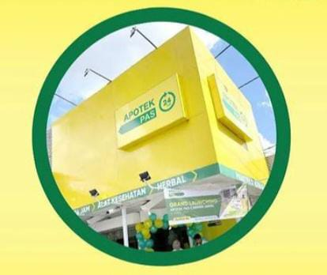
Aplikasi untuk mengelola data obat, stok, transaksi penjualan, riwayat, dan laporan pendapatan. Proyek ini menggunakan Python serta penyimpanan data JSON.
Lihat di GitHubDi luar kegiatan akademik
04 — BEYOND THE SCREENGame dan olahraga yang saya nikmati untuk mengisi waktu luang.
Games I enjoy playing
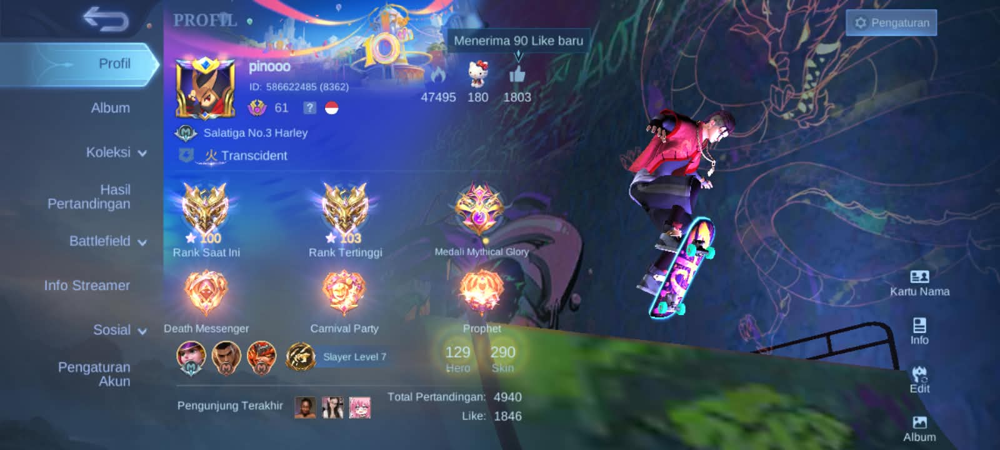
Mobile Legends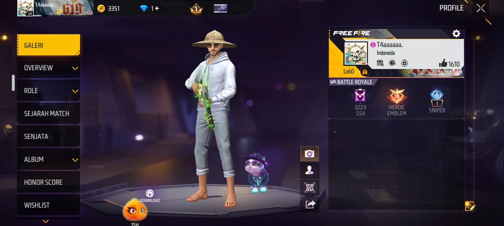
Free Fire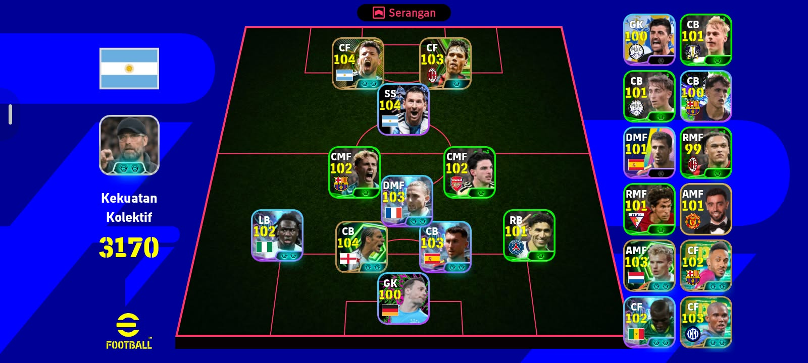
Efootball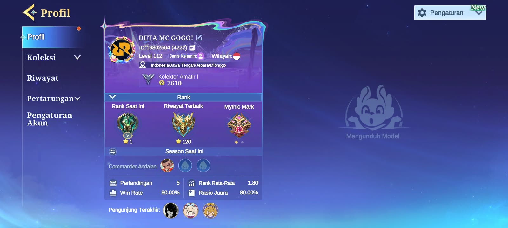
MCGG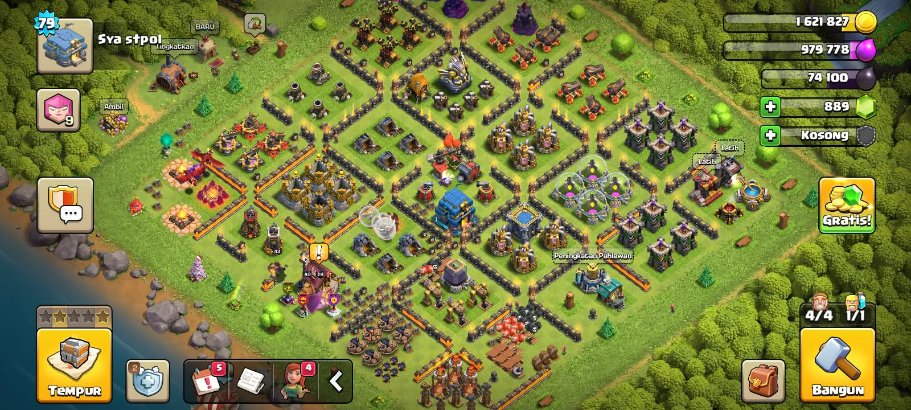
Clash of ClansSports and activities I enjoy
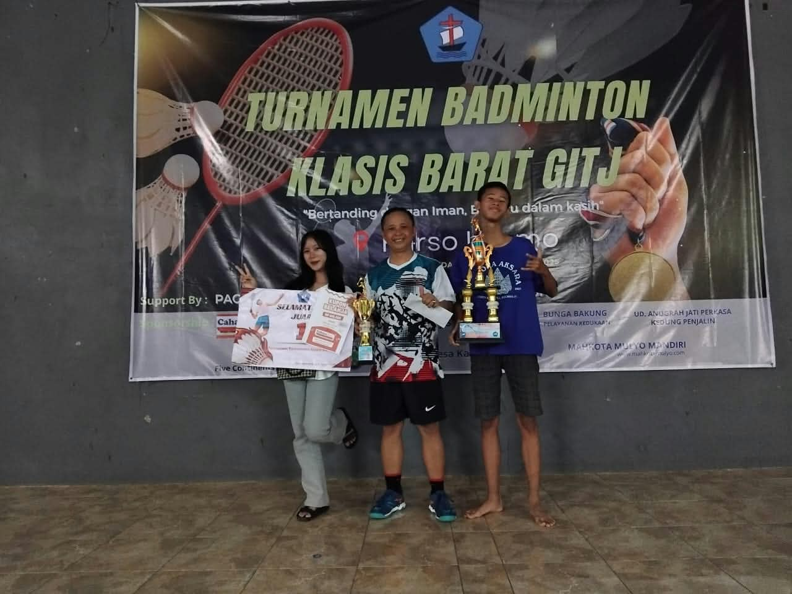
Badminton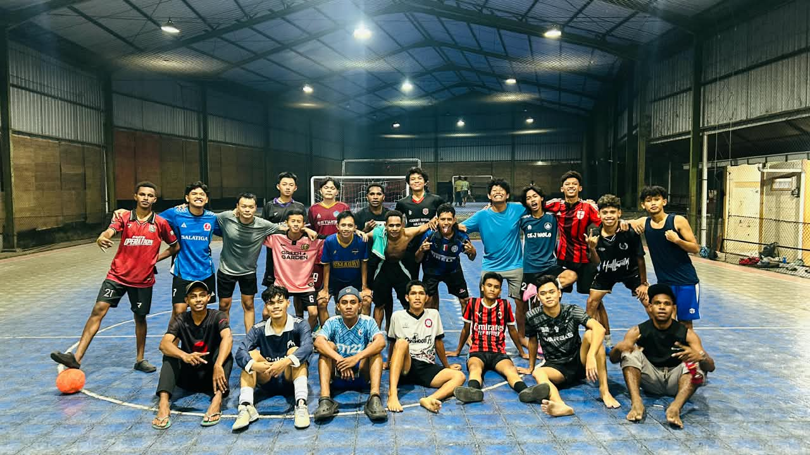
Futsal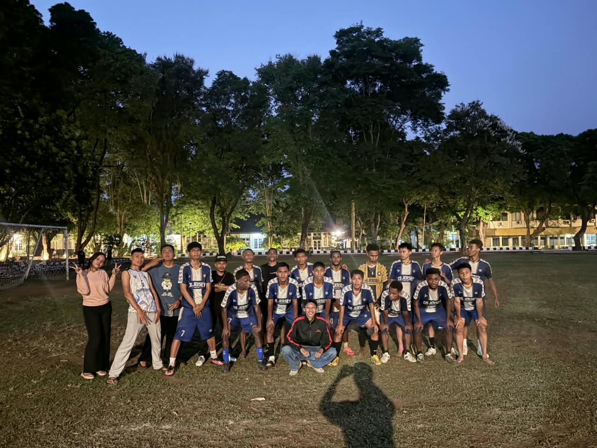
Sepak Bola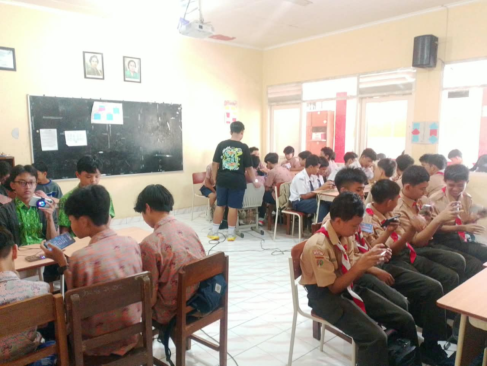
Esport